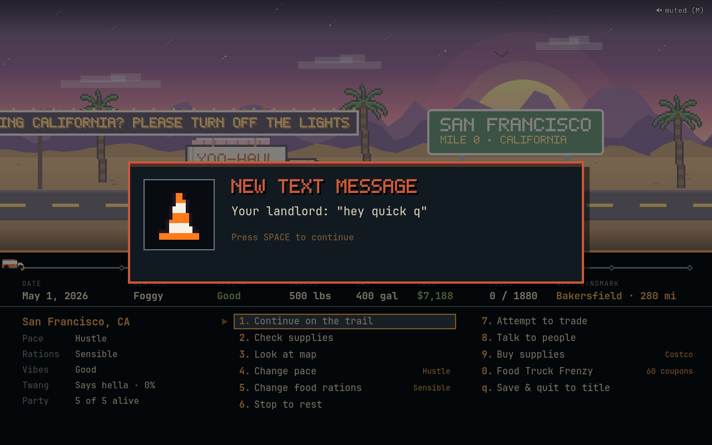
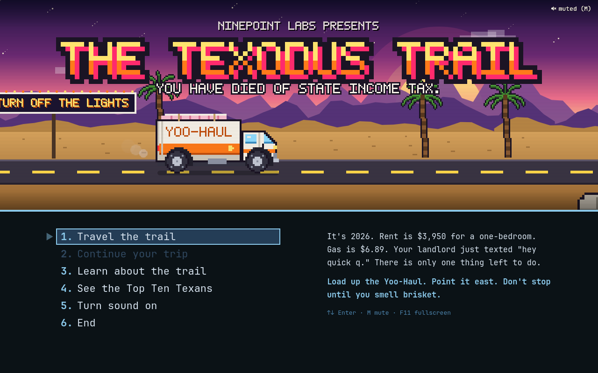
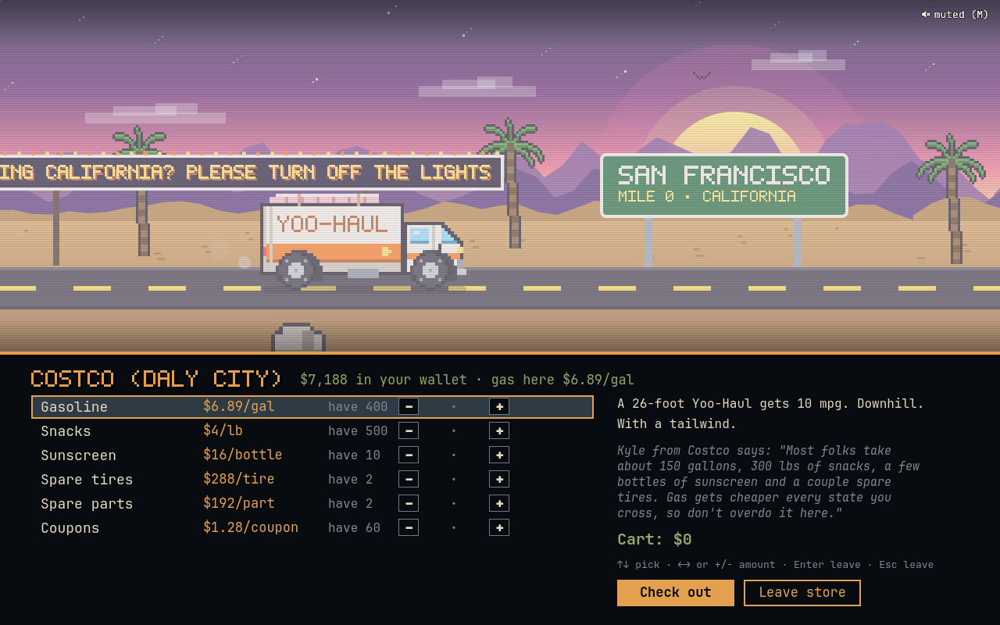
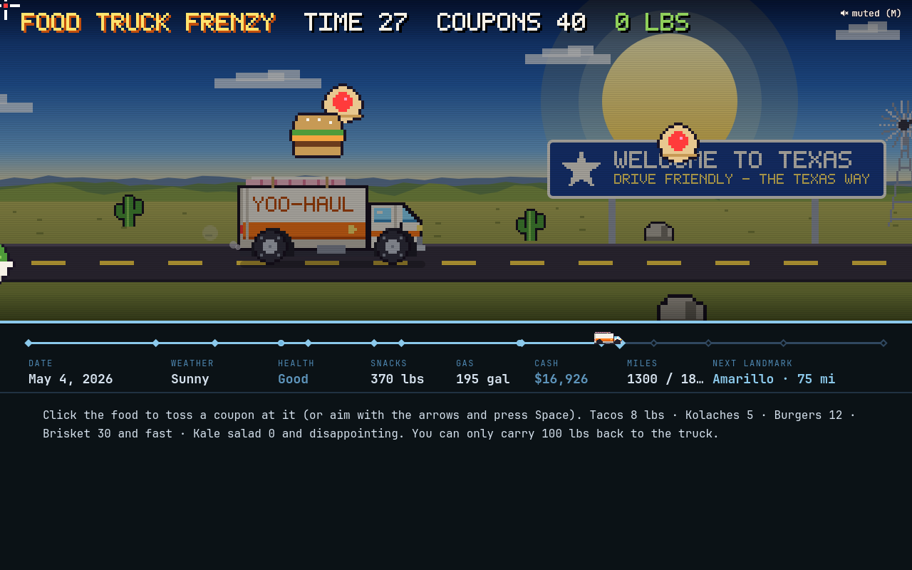
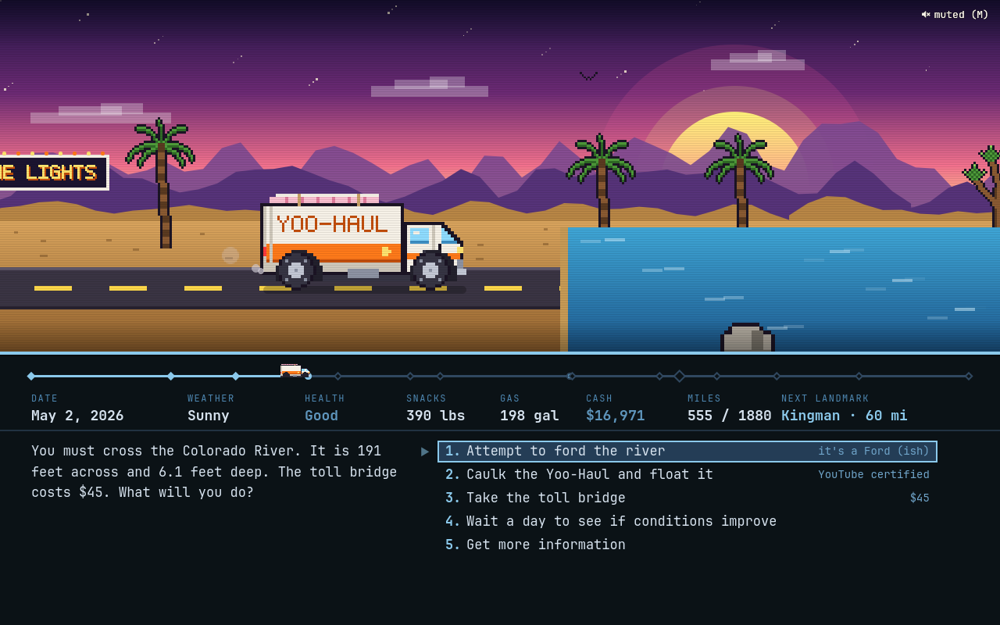
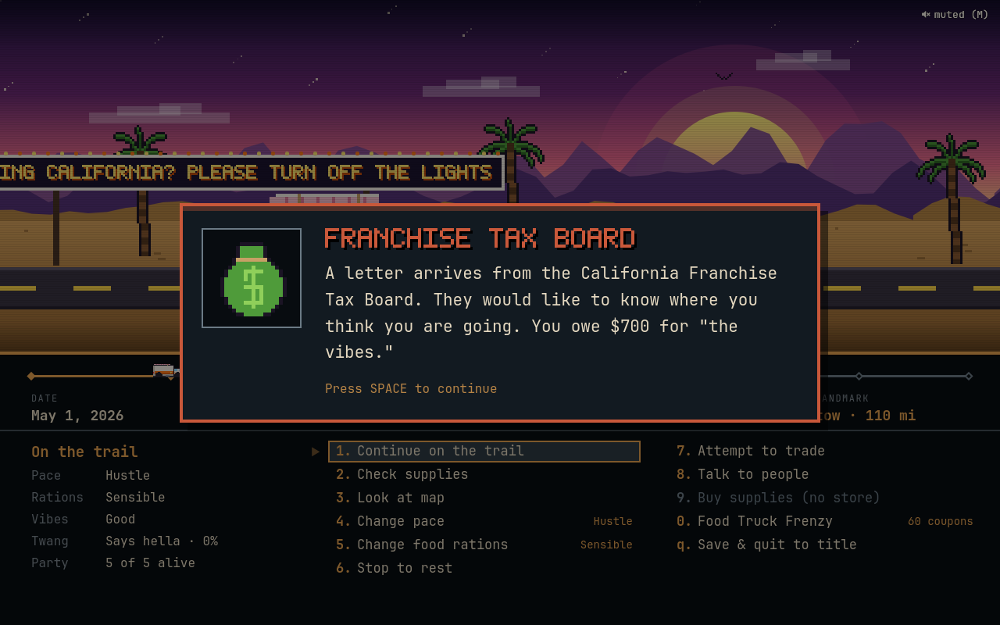
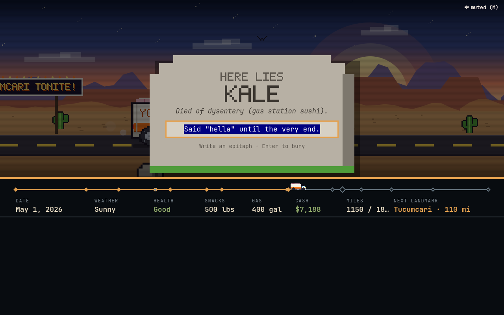
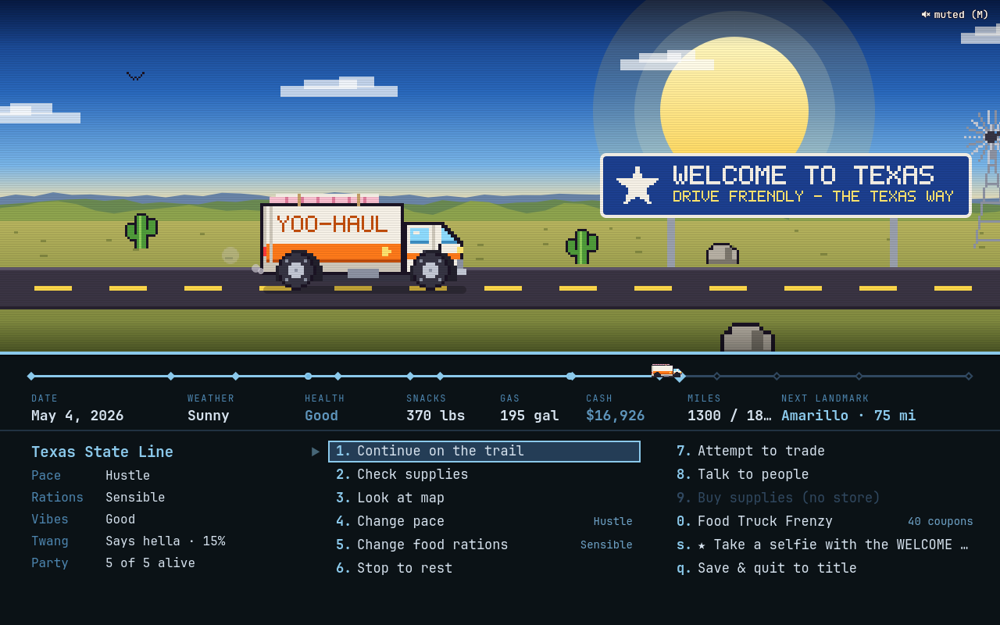
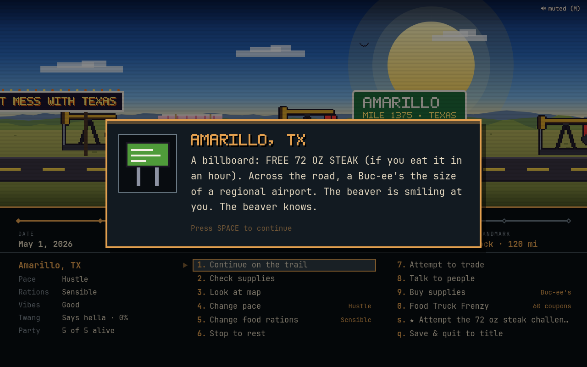
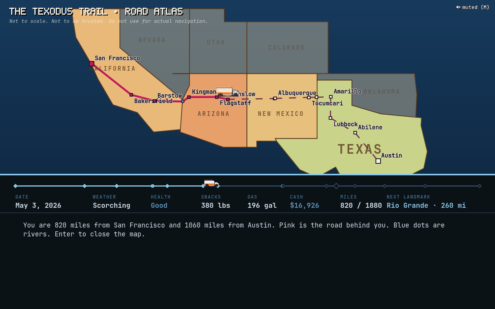

Ninepoint Labs presents
You have died of state income tax.
It's The Oregon Trail, but for the great California-to-Texas migration. 1,880 miles of I-40. One rented truck. A mattress on the roof and a sourdough starter you could not bring yourself to pack. Your party will get dysentery. It's tradition.
Free & open source. MIT licensed. Runs on Linux. It does not run on a Mac, because everyone with a Mac already moved.
Now showingThe Official Trailer
Narrated by a man who has never once been in a hurry, and a surfer who should not have been allowed to vote on the river crossing.
The premiseEveryone you know is moving to Austin
It's 2026. Rent in San Francisco is $3,950 for a one-bedroom. Gas is $6.89 a gallon. Your company called everyone back to an office it has since sublet. And your landlord just texted hey quick q
.
There is only one rational response: load everything you own into a 26-foot rental truck and drive it into the desert like it's 1848, except the gold is a lack of state income tax and the cholera is gas station sushi.
The Texodus Trail is a loving, mildly unhinged remake of the 1985 classic. Same numbered menus. Same river crossings. Same tombstones. Different dysentery.

- 1,880miles of I-40 and friends
- $4,812for the Yoo-Haul
- $612to return it. You're not going back.
- 15landmarks, all real, some regrettable
- 30+things that go wrong on the road
- 0%state income tax (property tax: don't ask)
Critical acclaimWhat people on the route are saying
Every quote below appears in the game. Nobody was paid. Most of them were not asked.
Folks who go Grindset end up in the ditch talking to cactuses.
Big Earl, a trucker
Rent's going up 30% anyway. Good luck out there, champ.
Your former landlord, jogging past
Austin's just California with brisket, son.
An old cowboy, Abilene
Most folks take about 150 gallons, 300 lbs of snacks, a few bottles of sunscreen and a couple spare tires. Gas gets cheaper every state, so don't overdo it here.
Kyle, Costco (Daly City)
Keep Austin Weird. Also, could you not.
A man on a scooter
Lost a whole Tesla here last week. Floated great until it didn't.
A guy fishing at the Colorado River
…
A lizard. It doesn't say anything. It just judges you.
Hey! I'm also from the Bay! Small world! Do you want to start a running club?
Your new neighbor, Austin
Choose your fighterFour ways to leave California
Each one gets a different bank balance and a different score multiplier. None of them get a refund on the deposit.
FeaturesEverything the brochure promised, and the stuff it didn't









Native to Omarchy, polite to everyone else
- Wears your theme. Every menu follows your current Omarchy theme, live. The scenery keeps its own sunset, because some things are sacred.
- No Electron. It runs on Quickshell, the same engine as the Omarchy shell. The Yoo-Haul is already full. There's no room for a second copy of Chromium.
- Saves after every move. Close it mid-river, reboot, come back next week. Your party will still be standing on the bank, judging you.
- An original chiptune soundtrack. Every note and sound effect is generated from scratch by a tiny synth. No samples were harmed. Several were never born.
The routeSan Francisco to Austin, the hard way
Fifteen landmarks along the real route. Gas gets cheaper in every state. So does your sense of self.
In memoriamThe Obituary Generator
Somebody is going to die out there. Might as well know how. The game has fifteen ailments, a dozen epitaphs, and no mercy. Press the button to bury a random member of your party, the way nature and the I-40 intended.
Leading causes of death on the Texodus Trail: dysentery, gas station sushi, In-N-Out withdrawal, ERCOT-induced anxiety, the meat sweats, and drowning (while vlogging).
Here lies
Kale
Died of dysentery (gas station sushi).
"Should have bought Bitcoin in 2011."
Mile 1,150 · New Mexico
Financial planningShould you move to Texas?
A rigorous, peer-unreviewed calculator built on numbers from the game and a deep misunderstanding of economics. Not financial advice. Barely arithmetic.
Hall of fameThe Top Ten Texans
The default leaderboard you'll be measured against. Your name goes here when you make it. If you make it.
| # | Name | Points | Rating |
|---|
Frequently avoided questionsFAQ
Is this political?
It's a game about rent. California gets roasted for the prices, Texas gets roasted for the weather, the grid and the property taxes, and Austin gets roasted for becoming the thing everyone left. Texas just has more surface area.
Is it accurate?
The landmarks are real. Winslow has a corner, and you can stand on it. The gas prices are vibes. The Yoo-Haul gets 10 mpg, downhill, with a tailwind, which is the most accurate thing in the game.
Will it run on my Mac?
No. It runs on Linux under Wayland, using Quickshell. Your Mac is welcome to move to Linux. We hear the rent is cheaper.
What about Windows?
Windows users already have enough problems.
Can I finish the trail without anyone dying?
Technically, yes. Pick April, go Hustle pace, ration sensibly, take the toll bridge, and rest when people get sick. Spiritually, no. Something in you dies at the Barstow In-N-Out no matter what.
Why does my party keep dying of gas station sushi?
We don't have any more questions.
Is Yoo-Haul a real company?
No. Any resemblance to a real orange-and-white truck rental company is a coincidence we won't be taking questions about. Kyle also isn't a real Kyle.
Are there microtransactions?
No. The game is free and open source. The only thing that costs money in it is the move itself, which is, if anything, too realistic.
I'm a Texan. Should I be offended?
Bless your heart, no. You're the promised land. You also get a new neighbor from Palo Alto, and he wants to start a running club. We're sorry.
Hit the roadInstall
On Omarchy, everything it needs is already there. Clone it, run the installer, launch The Texodus Trail from the app launcher (Super + Space), or type texodus.
# pack the truck
git clone https://github.com/ninepointlabs/texodus-trail ~/Projects/texodus-trail
cd ~/Projects/texodus-trail
./install.sh
# change your mind
./install.sh --uninstall # keeps your save and Top Ten
./install.sh --purge # paves over the graves tooEverything installs into your home directory. No sudo, no daemons, no state income tax.
Not on Omarchy?
You need a Wayland desktop and:
| Arch | Fedora | Debian / Ubuntu | |
|---|---|---|---|
| Quickshell (required) | quickshell | COPR errornointernet/quickshell | build from source |
| Qt 6 multimedia (sound) | qt6-multimedia | qt6-qtmultimedia | qml6-module-qtmultimedia |
jq (launcher) | jq | jq | jq |
Nix users: quickshell, qt6.qtmultimedia and jq. You knew that already. You've been waiting to tell someone.
The installer tells you what's missing. Without Qt multimedia the game runs silent, like a Californian who just saw the price of a breakfast taco in Austin.
Tips from Kyle at Costco
- About 150 gallons of gas, 300 lbs of snacks, a few bottles of sunscreen and two spare tires gets most people there.
- Grindset pace gets you there fast and gets people killed.
- The toll bridge is boring. Boring is good.
- April is the sweet spot. August is a dare.
The West was lost. The South got a lotta new neighbors.